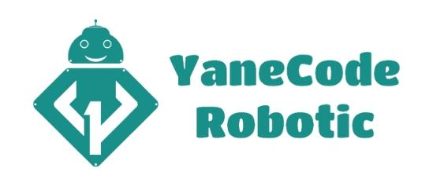

1. Présentation générale :
YaneCode degital est une agence digital basée à Safi, dont l'objectif est d'aider les TPE,PME et les indépendants à créer des solutions numériques répondant au besoin cible de ses clients
En cette année 2022, YaneCode Digital, a vu le démarrage de deux autres nouvelles branches :
YaneCode Robotic
YaneCode Academy

YaneCode Robotic est une boutique en ligne qui vend des équipements robotiques Arduino, Raspberry, etc.., elle propose à ses clients, la possibilité de commander différentes quantités selon leur besoin (https://robotic.yanecode.com/), en assurant une bonne qualité du produit.
YaneCode Academy (https://academy.yanecode.com/), est une plateforme de formations en ligne certifiantes, a pour but d’initier les étudiants ou bien les diplômés à acquérir de nouvelles compétences dans le monde de l’informatique (développement web/ dev mobile/ design/ Robotic) pour une meilleure insertion dans le marché du travail.
2. Domaines des services :
| Dev Web | Dev Desktop | Dev Mobile | E-commerce |
|---|---|---|---|
| IA/iOT | Cloud | Sales Force | Motion Graphique |